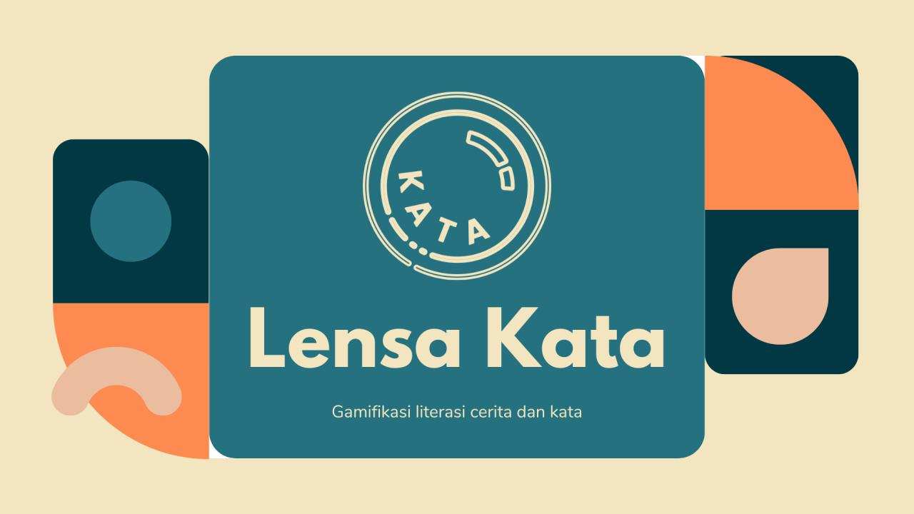
Lensa Kata
Lensa Kata is a gamified literacy platform designed to help elementary school children practice reading comprehension, vocabulary, and creative writing.
Product Designer
8 Team Members
4 Months (2024)
MSIB - Educourse.id (Batch 7)
2nd Best Capstone Project
Project Overview
Lensa Kata is a project idea developed by our team to fulfill the capstone project requirement for the Kampus Merdeka - Educourse.id program, specifically within the "Platform and Web Developer (Specialist Education Platform) Certified Independent Study Program," Batch 7. The primary objective of this program is for each student team to build a web-based platform focused on the education sector. The program encompasses various sub-focus areas closely related to web programming, including UI/UX design.
The main challenge is; we do not have much time to delve deeply into the specifics of UI/UX, as the primary objective of this program is to produce a functional web application. This project environment forced us to select UX design process that is efficient in terms of time and effort, allowing us to prioritize overall critical tasks in alignment with the program's main goal. Dealing with the time constraints, our strategy focuses on product thinking and innovation approach, because we want to run the fastest path forward while delivering the greatest possible UX impact.
Empathize
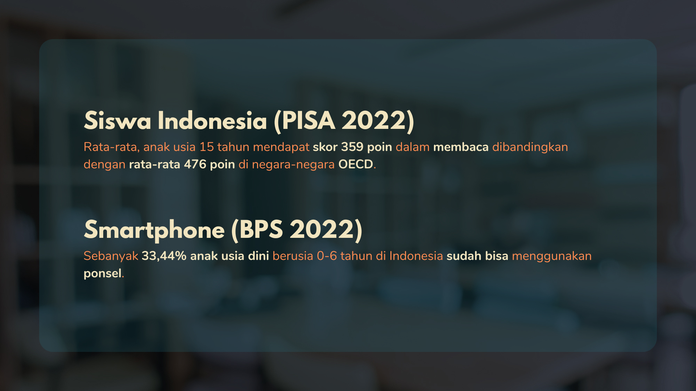
As a method to empathize, we conducted a literature review to identify current issues within education in Indonesia. Our research focuses on literacy among children.
The problem is not simply that children are reading less, but that literacy is competing with an increasingly digital environment. PISA 2022 shows that Indonesian students scored an average of 359 points in reading, significantly below the OECD average of 476. At the same time, digital devices are becoming part of children’s everyday lives from an early age.
BPS reported that 33.44% of children aged 0–6 in Indonesia were already able to use mobile phones in 2022. These findings suggest an opportunity to rethink how literacy is introduced: instead of positioning reading as an activity that competes with digital entertainment, we explored how familiar interactive experiences could be used to make literacy practice more engaging.
Define
Based on the issues we have explored regarding education in Indonesia, we conducted a Focus Group Discussion (FGD) to synthesize our findings into a clear identification of the current problems. Defining these problems will help us determine which features to design.
We understand that children prefer spending their time on their devices rather than reading physical books. This erodes their attention span (and ability to focus), making the reading of long textbooks feel extremely tedious and exhausting. Many children struggle to understand the content of what they read (are functionally illiterate) and possess a limited vocabulary.
We synthesize the most significant insight from the problem defining phase:
1. We can leverage the devices children already use to engage them in literacy, given that web-based platforms are an integral part of these digital devices.
2. We also identified that the next challenge lies in making the learning process more enjoyable for children.
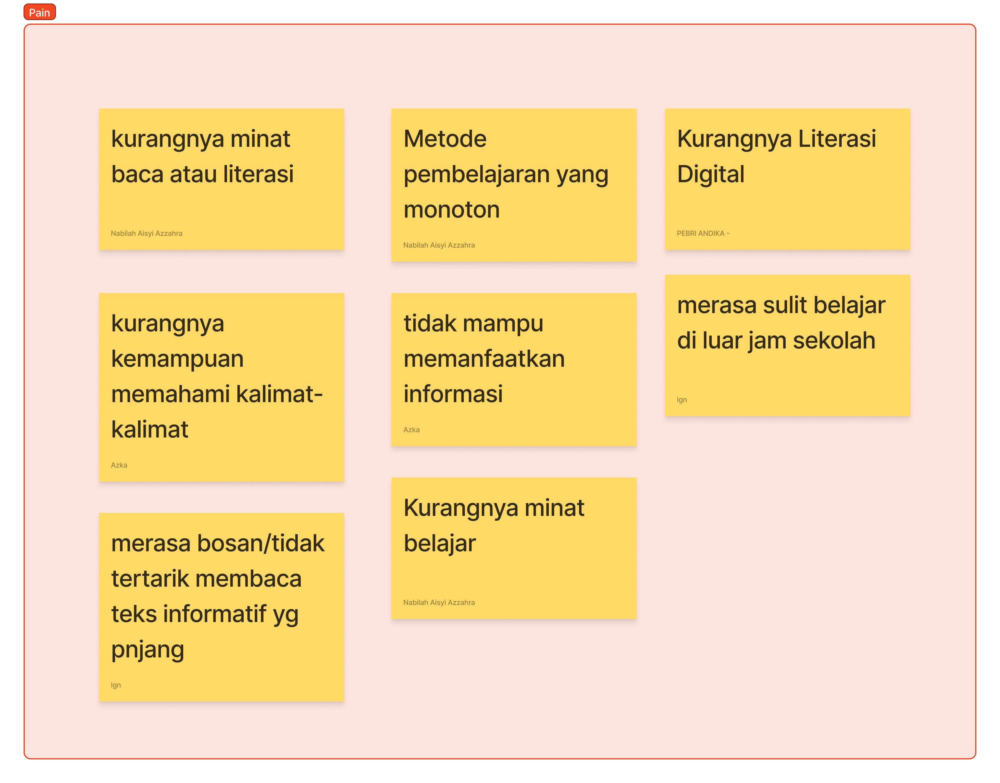
Reading comprehension
Children still face challenges in developing reading literacy.
Engagement
Traditional reading activities can struggle to compete with more engaging digital experiences.
Creative Expression
Students have difficulty expressing creative ideas from textual information.
Ideation
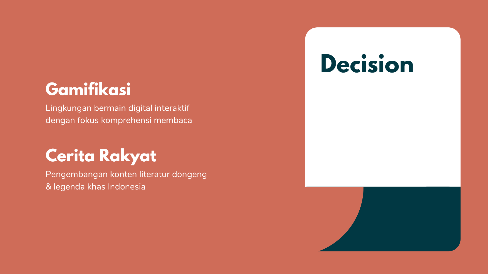
After identifying problem discovery and defining, we tried to concept some features that can communicate learning objectives in ways children can access and understand. We proposed focusing the learning experience around three core literacy activities: reading comprehension, sentence construction, and creative writing. Rather than treating reading as a passive activity, we proposed turning each activity into an interactive challenge—allowing children to actively engage with stories, identify keywords, construct sentences, and express their own ideas.
We brought these directions, where we aligned on using gamified elements to make literacy practice more engaging and encourage continued participation. We also introduced local folklore and legends as part of the content experience, giving children an opportunity to practice literacy through stories that are connected to Indonesian culture.
Baca Cerita
Helps children practice reading comprehension by identifying key words and interpreting the story.
Main SPOK
Challenge children to construct sentences with the structure of Subject, Predicate, Object, and Description.
Mengarang
Gives children a space to create their own stories based on what they have read.
Cerita Rakyat
Introduce users to local folklore and legends to help them connect with cultural stories, values and meaning.
Gamification
Reading practice can become repetitive, we explored game mechanics that could encourage continued participation without making learning feel exhausting. Supported by learning materials from Educourse.id, We used Octalysis Framework Theory to implement effective gamification ideas that suit this platform. Octalysis Framework is a human-focused gamification and behavioral-design framework created by Yu-kai Chou that maps human motivation to 8 Core Drives, such as Epic Meaning, Accomplishment, Scarcity and Curiosity. It shows designers exactly why people do something, so designers can make products people come back to. Based on this theory, we discussed and explored the gamification opportunities that can be made in our platform.
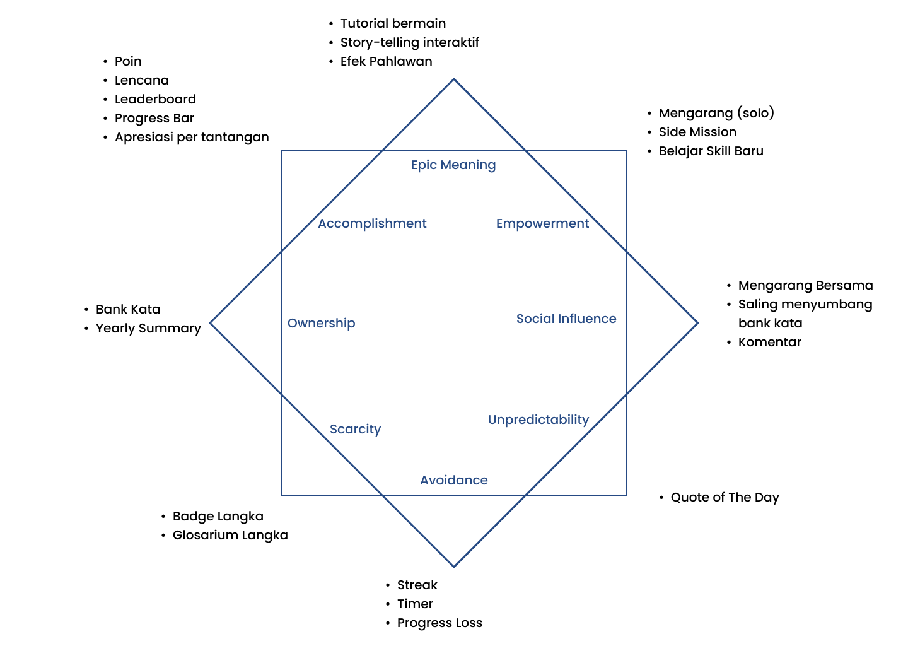
A lot of ideas are explored by our team, which can potentially increase user's interest. Though we cannot execute all of the ideas because of capstone's deadlines and other programming tasks. So we choose to design the most eficient and functional implementations that can be done in time by our developers.
Epic Meaning & Calling
Attract first-time users through Tutorials & Hints, guiding them through the game mechanics and their purpose.
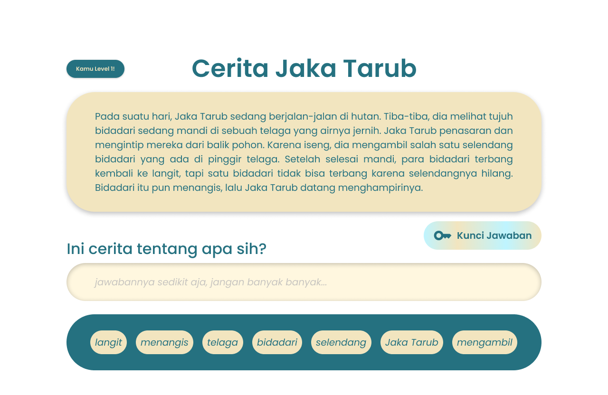
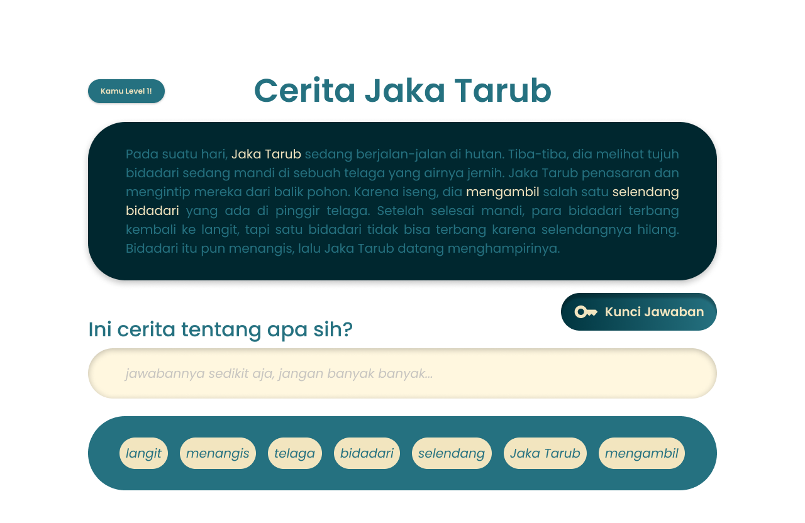
Empowerment
Encourage creative expression by combining elements from multiple stories.
Social Influence
Enable students to comment on others creations fostering interaction feedback collaboration in platform ecosystem.
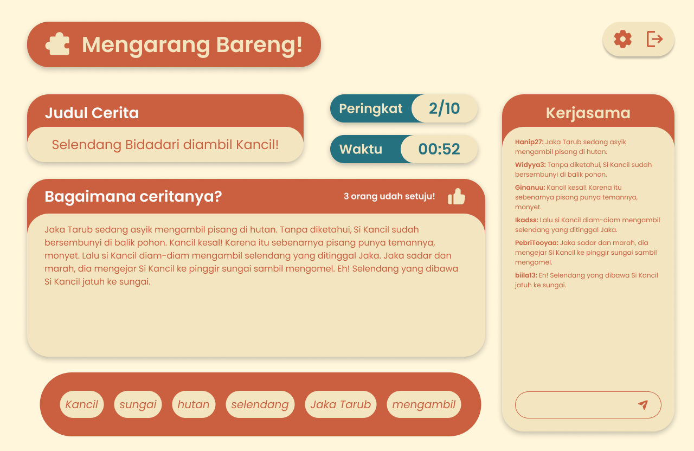
Accomplishment
Implement Leaderboard system. Encourages young learners to improve their scores and maintain consistent progress.
Loss & Avoidance
Encourage students to maintain streaks by completing tasks consistently and maximizing potential scores.
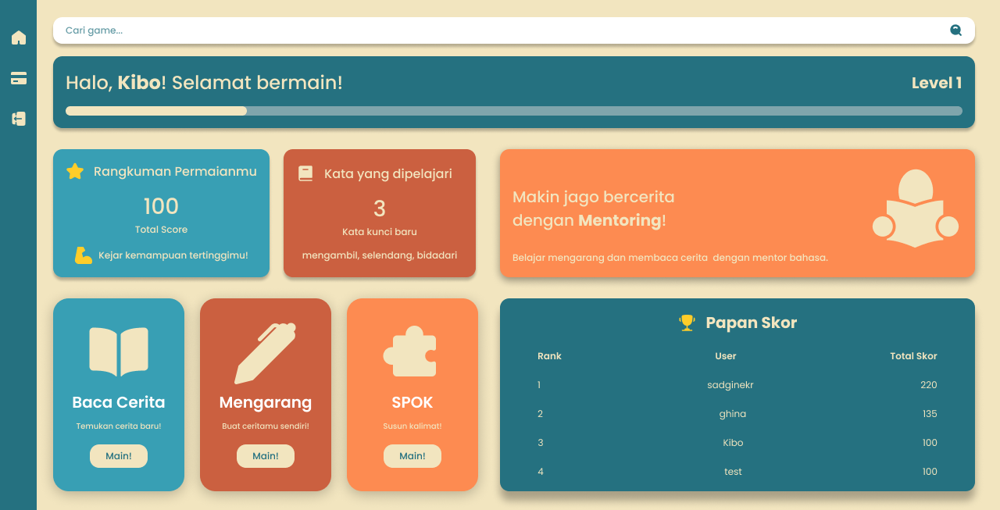
The Product
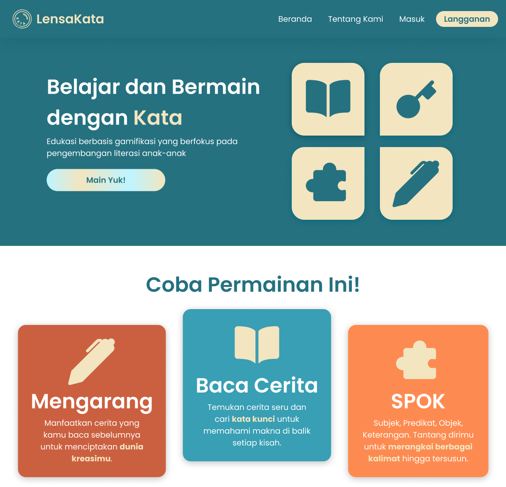
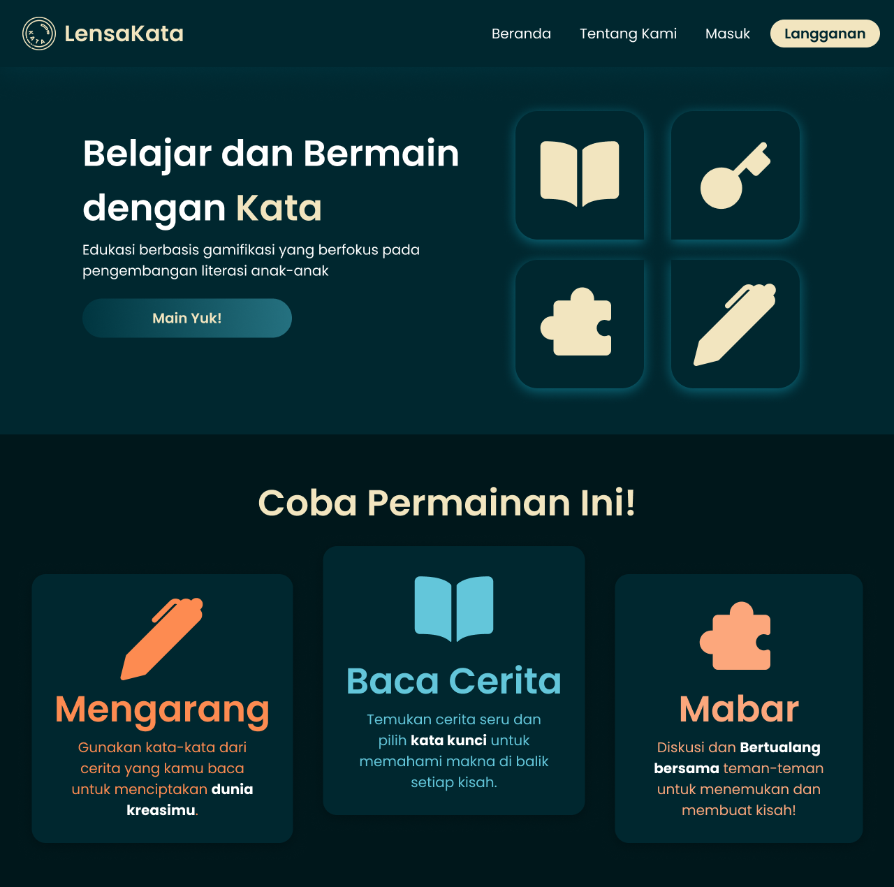
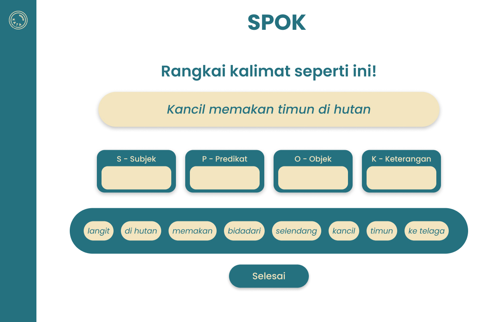
Our Achievement
Lensa Kata was awarded 2nd Best Capstone Project among 18 teams, based on evaluations of innovation, functionality, and final pitching presentation by industry judges.
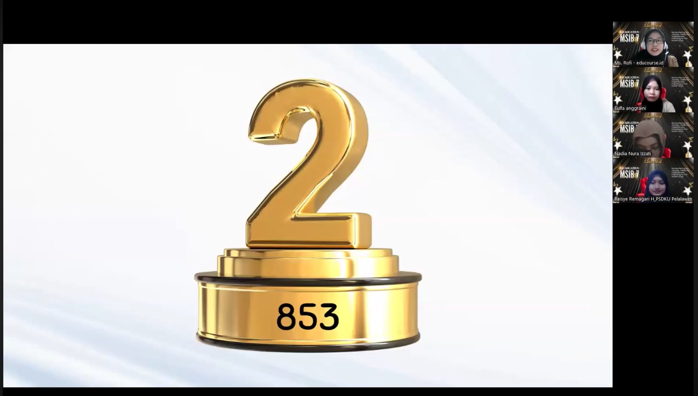
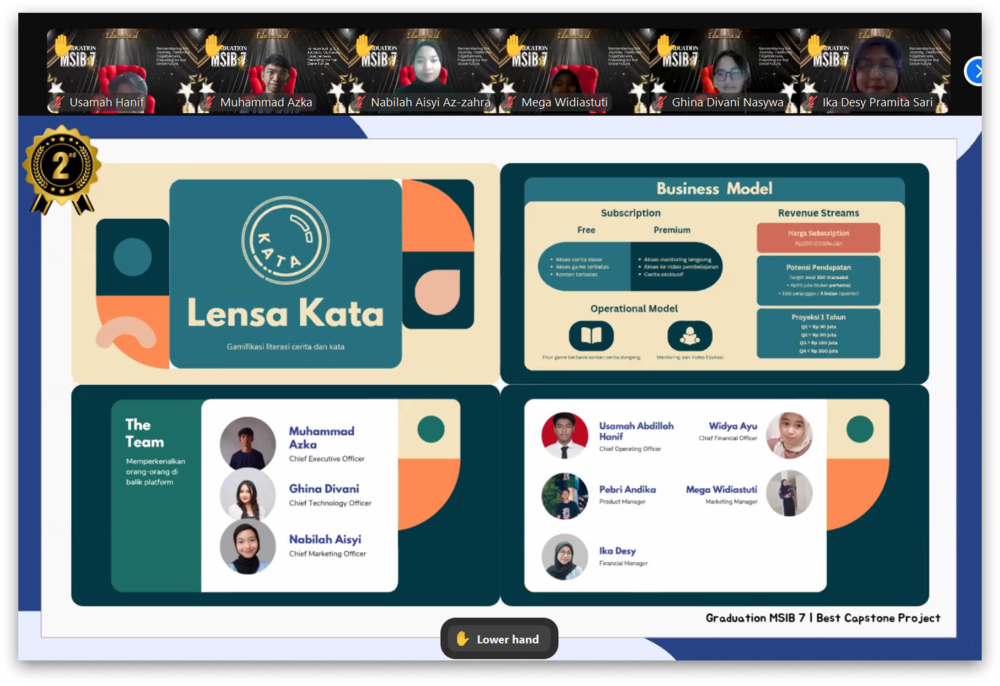
What I Learned
Gamification Should Support the Learning Goal
I learned that gamification is most effective when it reinforces the learning experience rather than becoming the goal itself. I had to consider how game mechanics could encourage users, especially children to stay engaged while still keeping literacy as the primary focus.
Start with the Learning Experience
Designing an educational product taught me to define what children need to learn before deciding what features to build. This helped me keep the product focused on three core learning goals: reading comprehension, sentence construction, and creative writing.
Balance Engagement with Simplicity
I learned that adding more mechanics does not necessarily make an experience more engaging. For children, interactions need to be simple enough to understand independently while still providing enough challenge to maintain their interest.
Collaboration Shapes the Product
As the team lead, I learned that good product decisions do not happen through design work alone. My role required me to connect research insights, product direction, and team execution, while bringing different perspectives together to keep the project moving toward the same goal.
© 2026 Muhammad Azka Nur Azhim. All rights reserved.